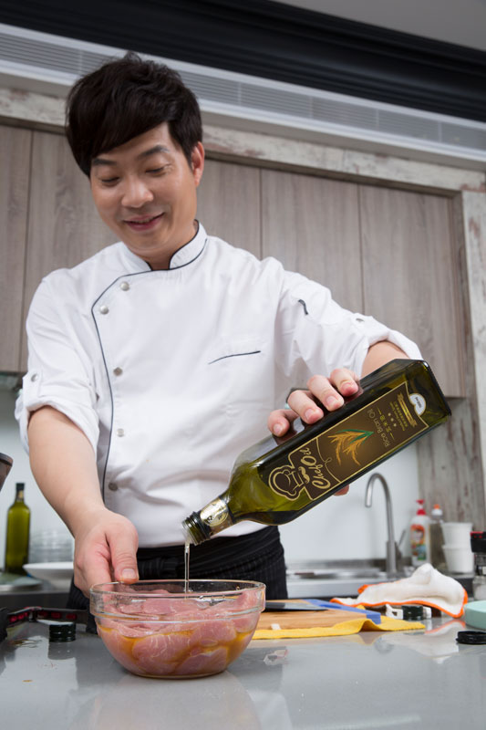
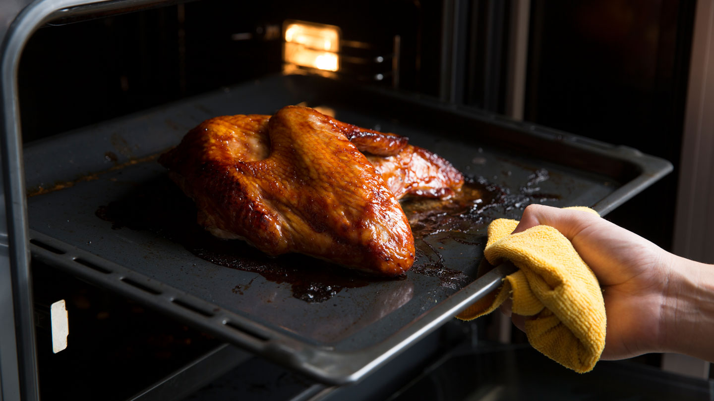
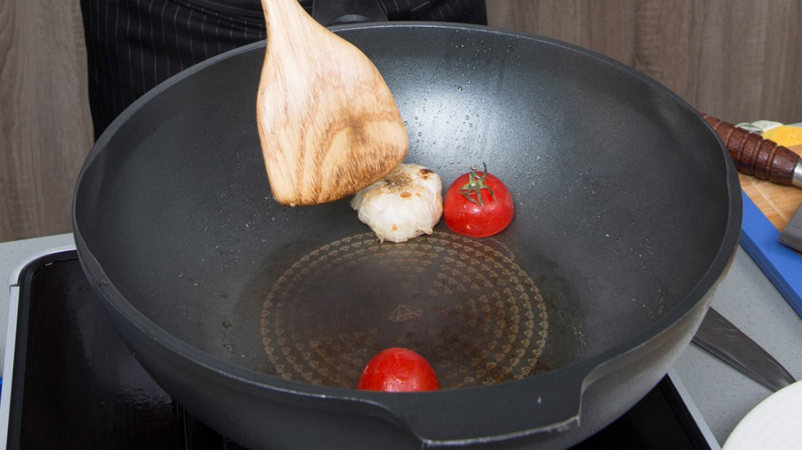
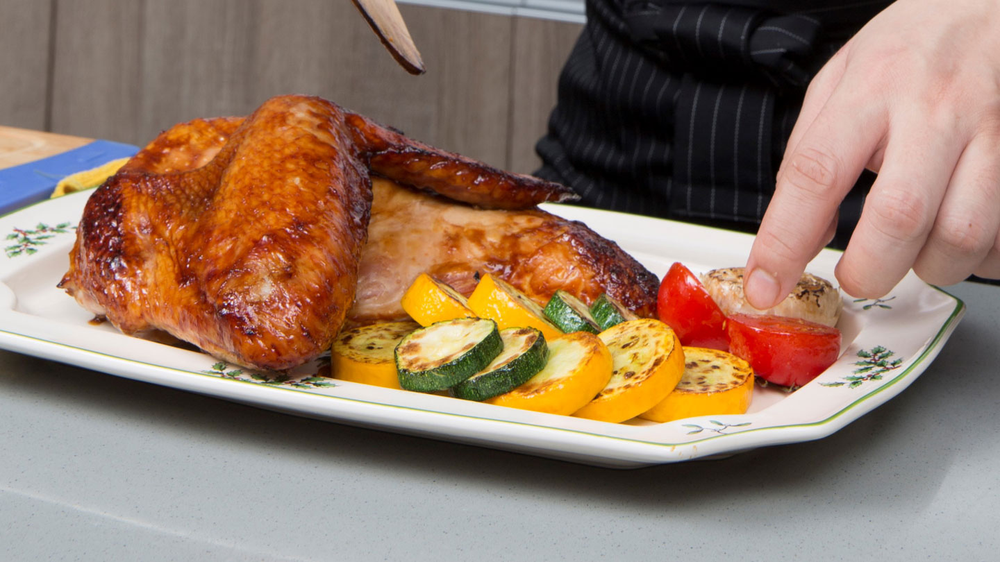
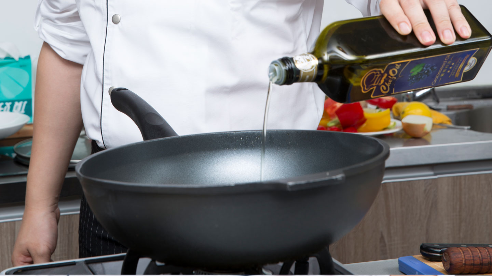
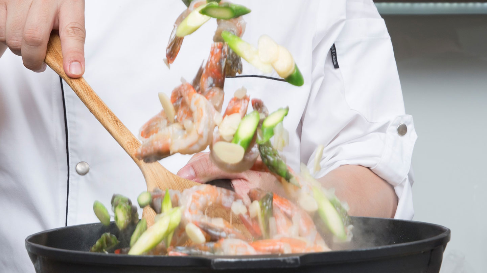
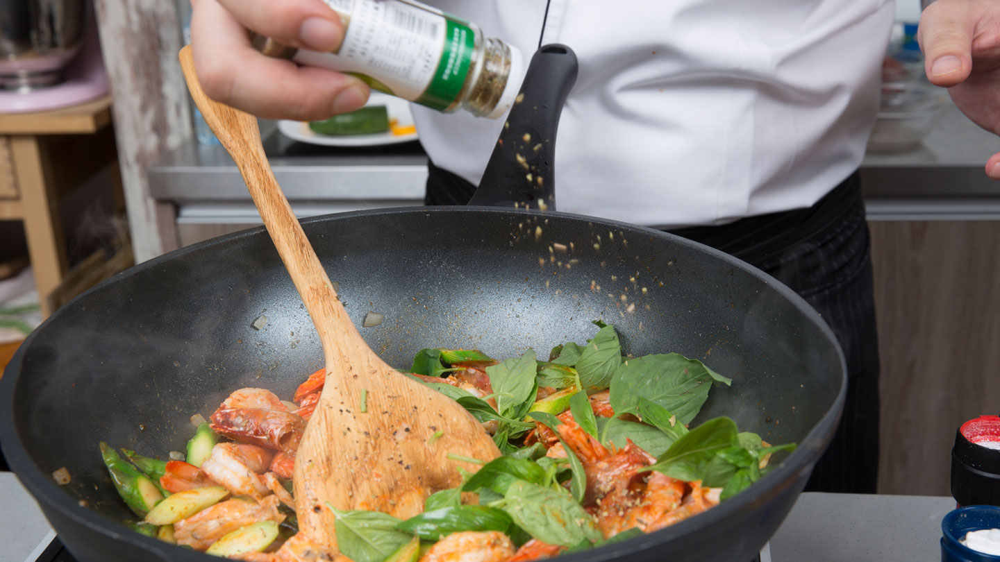
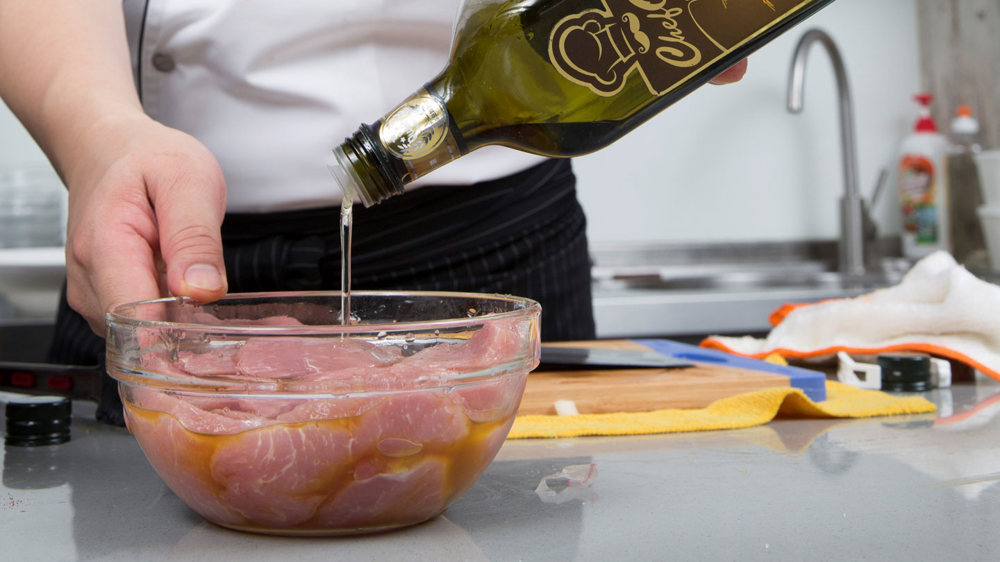
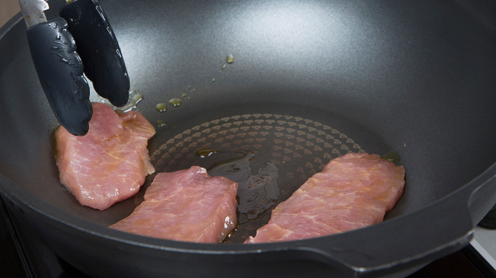
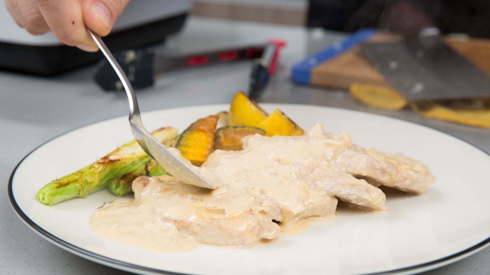

Chef Oil 主廚精選
超豐盛感恩餐
吮指回味 感恩節料理
傳統感恩節慶祝方式，餐桌上一定要有火雞與南瓜派兩種食物，龍師傅順應現代人飲食習慣，改用火雞、鮮蝦、豬排來教你做出好吃又好看的感恩節料理！他特別提醒：「西方料理少了爆香，但注重醬料的調味。適合涼拌的第一道冷壓橄欖油用來製作醬料更能增添風味，葡萄籽油質地柔順不會影響食材本身的鮮甜很適合鮮蝦料理，至於需要高溫烘烤的火雞，選發煙點較高的玄米油，才能吃得美味又健康喔！」。

RECIPES
1
香烤火雞肉佐（蜂蜜）油醋醬
油品
Chef Oil 第一道冷壓橄欖油 (Extra Virgin Olive Oil)
食材
-
火雞胸肉半隻
-
黃櫛瓜1條
-
綠櫛瓜1條
-
番茄2顆
-
蘆筍2支
-
蒜球1粒
調味品
1. 義式綜合香料、烤肉醬
2. 巴薩米可香醋、蜂蜜、冷壓橄欖油
作法
Step 1
火雞胸肉撒上義式綜合香料後，再將烤肉醬(1)塗抹均勻，放入烤箱（上火
180度，下火200度）烤至60分鐘。

Step 2
番茄與蒜球先乾煎後，再與切片櫛瓜、切段蘆筍淋上橄欖油入烤箱，烤約20分鐘。

Step 3
將烤好的火雞胸肉與蔬菜取出擺盤，且將調味料(2)混合拌勻成蜂蜜油醋醬。

RECIPES
2
蒜味香料蘆筍鮮蝦
油品
Chef Oil 葡萄籽油 (Grapeseed Oil)
食材
-
白蝦300g
-
蘆筍10支
-
蒜片30g
-
九層塔葉20g
調味品
- 義式綜合香料、匈牙利紅椒粉、海鹽
- 黑胡椒粒、白酒
作法
Step 1
蝦開背去殼，蘆筍切片備用，鍋中加入葡萄籽油，待油熱。

Step 2
熱油炒香蒜片後，放入蝦子、蘆筍與調味料(1)拌炒均勻。

Step 3
起鍋前加入九層塔葉與白酒拌炒，撒上黑胡椒粒即完成。

RECIPES
3
楓糖南瓜嫩豬排
油品
Chef Oil玄米油 (Rice Bran Oil)
食材
-
豬里肌肉片300g
-
帶皮玉米筍2支
-
綠皮南瓜100g
-
洋蔥切末1顆
-
黃檸檬1顆
調味品
楓糖漿、鹽巴、動物性鮮奶油、醬油
作法
Step 1
南瓜切塊油炸定型並淋上楓糖漿烤熟，玉米筍與黃檸檬煎香備用；豬里肌肉片加入玄米油、鹽巴醃漬備用。

Step 2
鍋中加入玄米油加熱，放入豬里肌肉煎至兩面金黃，加入洋蔥末炒香。

Step 3
放入動物性鮮奶油與醬油拌炒均勻成醬汁，再將煎好的豬里肌肉片與蔬菜擺盤後，淋上醬汁即完成。
